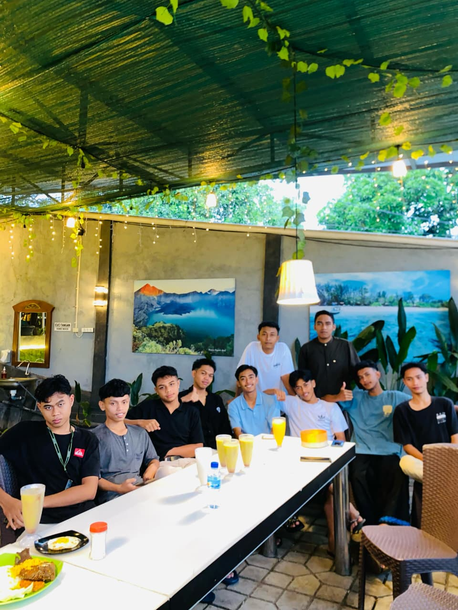
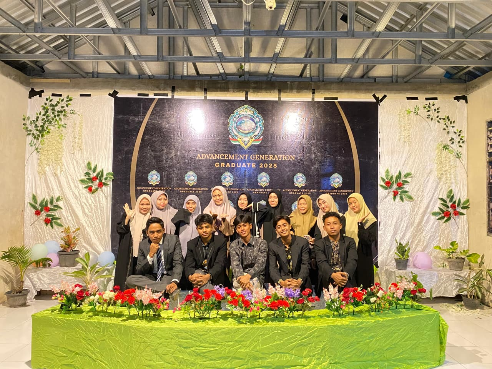

Hari Pertama / Perkenalan
Momen awal kenalan dan semangat tahun ajaran baru.
Awal05
Satu halaman untuk menyimpan foto, cerita, dan tawa selama masa sekolah. Biru langit kenangan, emasnya persahabatan — selamanya di hati.
Kenangan yang ingin kita simpan bersama
Kami angkatan Graduate 05 di PONDOK MODERN AL-HIKMAH PEMENANG. Dari hari pertama masuk sekolah hingga hari perpisahan, banyak momen indah yang layak diabadikan di halaman ini.
Website ini dibuat sederhana agar semua teman bisa melihat kembali: study tour, pentas, lomba, kegiatan keagamaan, ujian, dan foto-foto random di kelas.
“Sekolah akan berakhir, tapi kenangannya tetap hidup.”
Simpan foto di folder images/ — sesuaikan nama file di bawah


Momen awal kenalan dan semangat tahun ajaran baru.
Awal
Perjalanan bareng teman dan guru — full tawa dan foto.
Wisata
Acara sekolah, porseni, atau tampil di panggung.
Acara
Foto random, jajan, atau belajar bareng sebelum ujian.
Kelas
Wisuda, baju angkatan, dan air mata bahagia.
Wisuda
Pengajian, pesantren kilat, atau momen berkah bersama.
KeagamaanPerjalanan dari tahun ke tahun — sesuaikan tahun Anda
Kenalan angkatan, organisasi kelas, dan lingkungan baru.
Projek kelompok, ekstra, dan mulai banyak foto bareng.
Ujian, bimbingan, persiapan lulus, dan kenangan terakhir di sekolah.
Hari yang ditunggu — lulus bersama, dengan logo angkatan yang sama.
Hal-hal yang sering kita ingat
“Terima kasih sudah jadi bagian dari masa sekolah terbaikku.” — Teman seangkatan
“Jumpa lagi di reunian — angkatan 05 selalu di hati.” — Teman seangkatan
Grup WA atau media sosial angkatan
Punya foto atau cerita baru? Kirim ke pengurus angkatan atau grup WhatsApp.
Gabung Grup WhatsAppInstagram: @allaxe_generation05